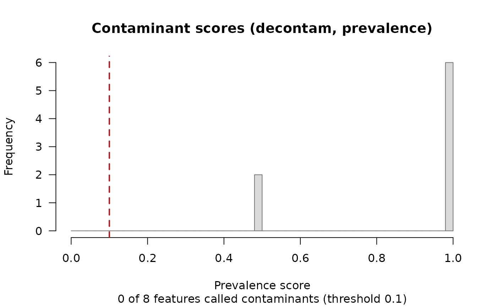
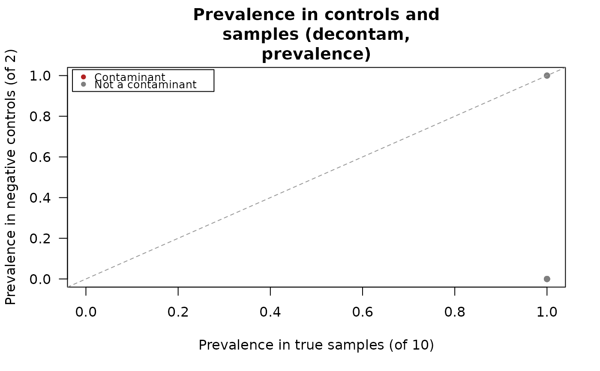
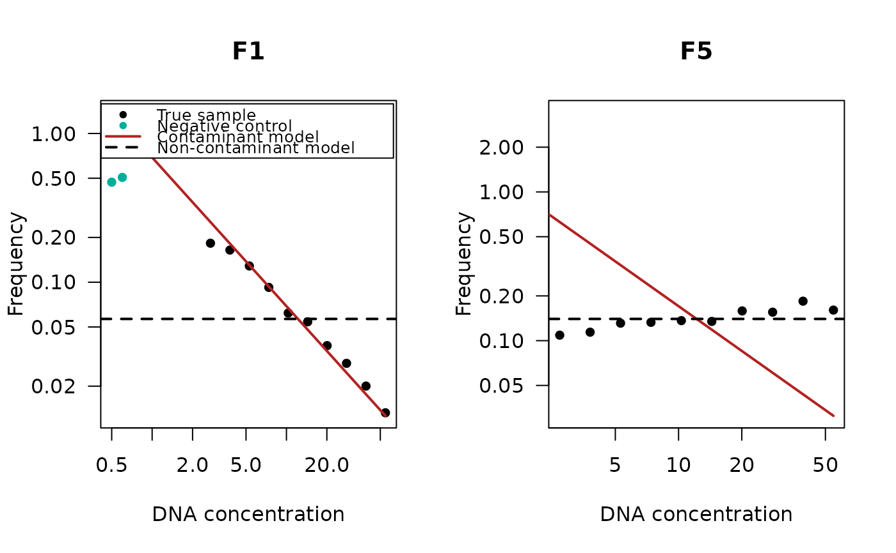

Find the features (ASVs, OTUs, taxa, ...) that come from contaminating DNA, by decontam's two signatures of contamination (Davis et al. 2018):
Usage
decontam(
counts,
conc = NULL,
neg = NULL,
data = NULL,
margin = 1L,
method = c("auto", "frequency", "prevalence", "combined", "minimum", "either", "both"),
batch = NULL,
batch_combine = c("minimum", "product", "fisher"),
threshold = 0.1,
norm = "percent",
cpus = n_cpus()
)
decontam_not(
counts,
neg,
data = NULL,
margin = 1L,
threshold = 0.5,
norm = "percent",
cpus = n_cpus()
)Arguments
- counts
A count table (samples \(\times\) features), or any of the objects listed under Input Types. Each sample's values are divided by its total (
norm = 'percent'). Samples with no counts are left out, with a warning.- conc
Each sample's DNA concentration before sequencing (for instance a fluorometer reading of the amplified DNA, or a qPCR count), in any unit: a positive number, for every sample, controls included. Only its inverse relation with a contaminant's frequency matters. A numeric vector with one value per sample, matched to the samples by name when both are named, else in the samples' order; or, when
datais given, the name of one of its columns. Needed for the frequency test. Default:NULL.- neg
Which samples are negative controls: a logical vector,
TRUEfor a control andFALSEfor a true sample, matched asconc, or the name of a column ofdata. Samples withNAare left out of both tests. Needed for the prevalence test; for the frequency test, the controls are left out. Extraction blanks give the best results. Default:NULL.- data
Optional sample metadata: a data frame with one row per sample, holding
conc,negorbatchas columns. Rows are matched to the samples incountsby row name, and rows for other samples are ignored; without row names, they must be in the same order as the samples. Default:NULL.- margin
The margin containing samples.
1if samples are rows,2if samples are columns. Ignored whencountsis a special object class (e.g.phyloseq). Default:1- method
Which test calls the contaminants:
'auto'(the default):'frequency'when onlyconcis given,'prevalence'when onlynegis, and'combined'when both are.'frequency','prevalence': one test.'combined': the two scores combined by Fisher's method, \(P(\chi^2_4 > -2 \log(s_f s_p))\).'minimum': the smaller of the two scores.'either','both': a contaminant by either test, or by both (pis thenNA).
- batch
Optional batches (sequencing runs, extraction plates, ...): one value per sample, matched as
conc, or the name of a column ofdata. Each batch is scored on its own, and the scores are combined bybatch_combine. Each batch needs at least two samples, controls included (a warning at four or fewer). Default:NULL, one batch.- batch_combine
How a feature's scores in the batches are combined into one:
'minimum'(the default; the lowest score of the batches that have one),'product'(their product; 1 when no batch has a score, as decontam), or'fisher'(Fisher's method, with a missing score counted as 0.5). Applied to each test's scores, even with one batch.- threshold
A feature is called a contaminant when its score is strictly less than
threshold, a number from 0 to 1. Default:0.1, as decontam;0.5calls every feature whose prevalence score says it is more prevalent in the controls than in the samples. Withmethod = 'either'or'both', two values, the frequency and the prevalence thresholds (one value is used for both). Fordecontam_not(), a feature is called a non-contaminant when its score is less thanthreshold(default0.5).- norm
'percent'(the default): each sample's values are divided by its total, as decontam'snormalize = TRUE.'none': the values are used as given (relative abundances already, or counts from samples of equal depth), asnormalize = FALSE. Both tests need non-negative relative abundances, so no other norm is allowed.- cpus
How many parallel processing threads should be used. The default,
n_cpus(), is the CPU cores this R process may use, within any limits set on it. Results are the same for anycpus.
Value
A data frame with one row per feature, of class
c("ecodive_decontam", "data.frame") (decontam()) or
c("ecodive_decontam_not", "data.frame") (decontam_not()), with
columns:
featureThe feature's name (its index if it has none).
freqIts mean relative abundance over all the samples, controls included (after
norm).prevThe number of samples it is present in.
prev_neg,prev_posThe number of negative controls and of true samples it is present in (
NAwithoutneg).p_freqThe frequency score (
decontam()only;NAwhen the frequency test wasn't run, or the feature is in fewer than two true samples of every batch).p_prevThe prevalence score (
NAwhen the prevalence test wasn't run, or the feature is in fewer than two samples of every batch). Fordecontam_not(), one minus the prevalence score.pThe score compared with
threshold, bymethod(fordecontam_not(),p_prev).contaminant, ornot_contaminantThe call:
p < threshold, withNAscores never called.
Attributes: method ("decontam" or "decontam_not"), test (the
method used, after 'auto'), threshold, batch_combine
(decontam() only), and n_neg and n_pos, the number of negative
controls and of true samples tested (without neg, 0 and every
sample). With batch, p_freq_batch and p_prev_batch are batch
\(\times\) feature matrices of the scores in each batch (for the tests
run).
Details
Frequency: a contaminant adds a roughly constant amount of DNA to every sample, so its relative abundance falls as the sample's total DNA concentration rises: it goes as \(1/C\). A true sequence's relative abundance doesn't depend on \(C\). Needs
conc.Prevalence: a contaminant is present in more of the negative controls than of the true samples. Needs
neg.
decontam() scores each feature by either or both (decontam's
isContaminant()), and decontam_not() reverses the prevalence test's
null hypothesis, to find the features that are not contaminants in
low-biomass samples, where most may be (decontam's
isNotContaminant()). Neither removes anything: keep the features that
aren't called, counts[, !res$contaminant] (or
counts[!res$contaminant, ] with margin = 2).
The frequency score. In each batch, over the true samples (not
controls) where the feature is present, \(k\) of them, with frequency
\(f\) and concentration \(c\): \(SS_0\) is the residual sum of
squares of \(\log f\) about its mean (the non-contaminant model,
frequency independent of \(c\)), and \(SS_1\) that of \(\log f
+ \log c\) about its mean (the contaminant model, \(\log f\) falling
with slope \(-1\) in \(\log c\)). The score is
\(F_{k-1,k-1}(SS_1 / SS_0)\), the lower tail of an F distribution:
small when the contaminant model fits much better. It is a heuristic, a
ratio of two sums of squares with equal degrees of freedom, not a
p-value, and Davis et al. call it a score. Features in fewer than two
true samples get NA.
The prevalence score. In each batch, the feature's presence in the
controls and in the true samples is a 2 \(\times\) 2 table. The score is
the one-sided p-value that the feature is more prevalent in the
controls: a chi-squared test of two proportions with a continuity
correction (as prop.test(alternative = "greater")), or, when an
expected count is below 5, Fisher's exact test's mid-p
(\(P(X > x) + P(X = x) / 2\) under the hypergeometric distribution of
the table's margins). A feature present in every sample of the batch
scores 0.5; one in fewer than two samples, or a batch without both
controls and true samples, gives NA.
Choosing threshold. Plot the scores (plot(res)): in Davis et
al.'s data they are bimodal, low for contaminants and high for the rest,
and the threshold goes in the trough. decontam's default is 0.1; 0.5
(with the prevalence test) removes every feature more prevalent in the
controls than in the samples, an aggressive choice suited to
low-biomass samples, where decontam_not() is the alternative.
Batches. Contaminants differ between reagent lots and runs, so
samples processed together should be scored together, as batch.
Controls and reporting
The guidelines of Fierer et al. (2025) for low-biomass studies ask for negative controls at every stage (sampling, extraction, library preparation), carried through sequencing like the samples, and for the contaminant-removal workflow to be reported. decontam's own advice is that extraction blanks give the best results. Statistical removal finds contaminants that come from reagents and the laboratory; it doesn't undo cross-contamination between samples ("well-to-well" leakage), which looks like a true sequence. Report the method, the test, the threshold and the number of features and reads removed.
Differences from decontam
decontam() and decontam_not() port decontam 1.32.0's
isContaminant() and isNotContaminant() (Artistic License 2.0;
Benjamin Callahan and Nicole Marie Davis), and their scores and calls
agree with it to rounding, except:
NAinnegleaves those samples out of both tests. decontam leaves them out of the prevalence table, but still counts them towards a feature's two samples, and its frequency test subsets with theNAs and returnsNAfor every feature.norm = 'percent'or'none'replacesnormalize = TRUEorFALSE.conc,negandbatchcan name columns ofdata, matched to the samples by name, instead of phyloseq sample variables; a phyloseq object is read as any other count table.The result is always the table (decontam's
detailed = TRUE), in snake case, withprev_negandprev_posadded and the per-batch scores kept as attributes;decontam_not()drops the emptyp.freqcolumn.A batch needs at least two samples; levels of a factor
batchwith no samples are dropped (decontam counts them and stops), and anNAbatch is an error. A batch with fewer than two true samples givesNAfrequency scores, where decontam stops.One
thresholdfor'either'or'both'is used for both tests without a message.decontam's
plot_frequency()isdecontam_frequency_plot(), drawn with base graphics, and the score histogram and the prevalence plot areplot()methods.
Input Types
The counts parameter is designed to accept a simple numeric matrix, but
seamlessly supports objects from the following biological data packages:
phyloseqrbiomSummarizedExperimentTreeSummarizedExperiment
For large datasets, standard matrix operations may be slow. See
vignette('performance') for details on using optimized formats
(e.g. sparse matrices) and parallel processing.
References
Davis, N. M., Proctor, D. M., Holmes, S. P., Relman, D. A., & Callahan, B. J. (2018). Simple statistical identification and removal of contaminant sequences in marker-gene and metagenomics data. Microbiome, 6, 226. doi:10.1186/s40168-018-0605-2
Fierer, N., et al. (2025). Guidelines for preventing and reporting contamination in low-biomass microbiome studies. Nature Microbiology, 10, 1570–1580. doi:10.1038/s41564-025-02035-2
Salter, S. J., et al. (2014). Reagent and laboratory contamination can critically impact sequence-based microbiome analyses. BMC Biology, 12, 87. doi:10.1186/s12915-014-0087-z
Eisenhofer, R., et al. (2019). Contamination in low microbial biomass microbiome studies: issues and recommendations. Trends in Microbiology, 27, 105–117. doi:10.1016/j.tim.2018.11.003
See also
plot.ecodive_decontam() for the score histogram and the
prevalence plot, and decontam_frequency_plot() for a feature's
frequency against conc.
Examples
# Ten samples and two extraction blanks, with DNA concentrations.
# F1 and F2 are contaminants: a fixed amount of DNA, so their share
# falls as the concentration rises, and they fill the blanks.
set.seed(1)
conc <- c(exp(seq(1, 4, length.out = 10)), 0.5, 0.6)
neg <- rep(c(FALSE, TRUE), c(10, 2))
counts <- matrix(rpois(12 * 8, 200), 12, 8, dimnames = list(
c(paste0('S', 1:10), 'Blank1', 'Blank2'), paste0('F', 1:8) ))
counts[, 1:2] <- round(counts[, 1:2] * 5 / conc)
counts[11:12, 3:8] <- 0
# The frequency test
res <- decontam(counts, conc)
res
#> # A data.frame: 8 × 9
#> # decontam (frequency)
#> feature freq prev prev_neg prev_pos p_freq p_prev p contaminant
#> <chr> <dbl> <int> <int> <int> <dbl> <dbl> <dbl> <lgl>
#> 1 F1 0.147 12 NA NA 0.000587 NA 0.000587 TRUE
#> 2 F2 0.151 12 NA NA 0.000397 NA 0.000397 TRUE
#> 3 F3 0.116 10 NA NA 1 NA 1 FALSE
#> 4 F4 0.116 10 NA NA 1 NA 1 FALSE
#> 5 F5 0.118 10 NA NA 1 NA 1 FALSE
#> 6 F6 0.117 10 NA NA 1 NA 1 FALSE
#> 7 F7 0.118 10 NA NA 1 NA 1 FALSE
#> 8 F8 0.117 10 NA NA 1 NA 1 FALSE
#> # Attributes: method, test, threshold, batch_combine, n_neg, n_pos
# Frequency and prevalence, combined
res <- decontam(counts, conc, neg)
res$feature[res$contaminant]
#> [1] "F1" "F2"
# Remove them
clean <- counts[!neg, !res$contaminant]
# The values as columns of sample metadata
meta <- data.frame(dna = conc, blank = neg, row.names = rownames(counts))
res <- decontam(counts, 'dna', 'blank', meta, method = 'prevalence')
# Low-biomass samples: the features that are not contaminants
decontam_not(counts, neg)
#> # A data.frame: 8 × 8
#> # decontam_not (prevalence)
#> feature freq prev prev_neg prev_pos p_prev p not_contaminant
#> <chr> <dbl> <int> <int> <int> <dbl> <dbl> <lgl>
#> 1 F1 0.147 12 2 10 0.5 0.5 FALSE
#> 2 F2 0.151 12 2 10 0.5 0.5 FALSE
#> 3 F3 0.116 10 0 10 0.00758 0.00758 TRUE
#> 4 F4 0.116 10 0 10 0.00758 0.00758 TRUE
#> 5 F5 0.118 10 0 10 0.00758 0.00758 TRUE
#> 6 F6 0.117 10 0 10 0.00758 0.00758 TRUE
#> 7 F7 0.118 10 0 10 0.00758 0.00758 TRUE
#> 8 F8 0.117 10 0 10 0.00758 0.00758 TRUE
#> # Attributes: method, test, threshold, n_neg, n_pos
# Plots
plot(res)

plot(res, 'prevalence')

decontam_frequency_plot(counts, c('F1', 'F5'), conc, neg)
